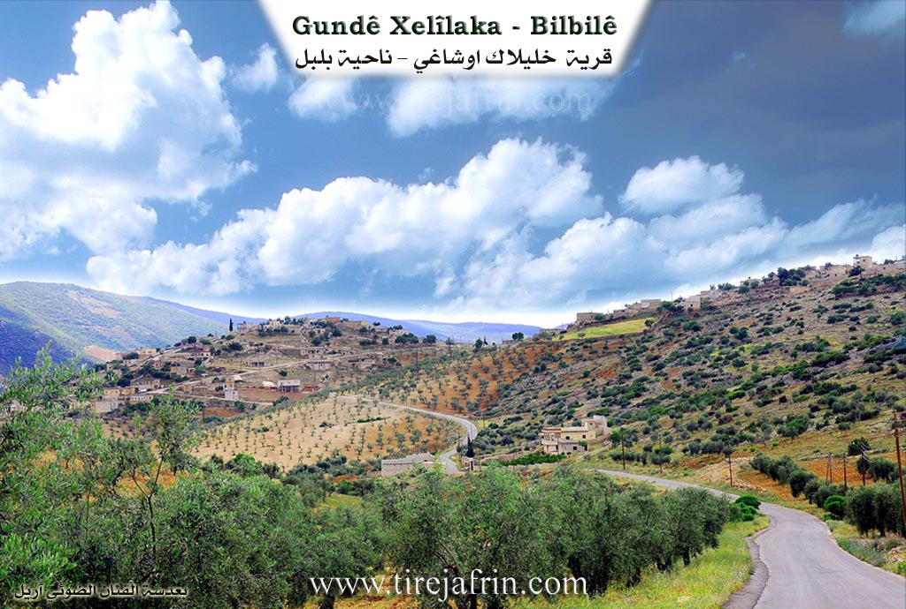

General Information
Nahiya (Subdistrict)
Bilbilê
Also Known As
Al-Khalil, Khalilak Oshaghi, Xelîlaka, Xelîlanko, الخليل, خليلاك اوشاغي, خللكو
Tribes
Amka, Keçela, Qizilbaş, Şidikin, Şêxan
Families, Clans, etc.
Cemîl, Evdî Koşker, Hesî Mêmê, Keçel, Kêlê, Kûşker, Mala Bekir, Mala Bilî Hemkê, Mala Ehmed, Mala Ehmedê Haskê, Mala Heso, Mala Hisê Memê Hak, Mala Kêla, Mala Mehmedê Hese Kêlê, Mala Reşê Ûsê, Mala Silêmanê Faqe, Mala Sîno, Mala Xelîl, Malê Bekir, Mihemedî Sîsê, Mistê Hisnê, Silêmên, Xelo

Photos


Basic Information about Xelîlaka
Source: Ax û Welat
Etymology: Named after the first settler, Xelîl (specifically Xelîl Amka)
Old Names: Xelîlak Uşaxî, El-Xelîl
Foundation Date/Period: Approximately 200 to 220 years ago
Caves: Zîrzemî
Number of Caves: 7
Springs: Zîrzemî
Hills: Çiyayê Hawarê, Serê Sûrê, Girê Medewer, Kela Şêrê
Shrines: Ziyareta Şêx Mehmûd
Ruins: Serincokê Çê, Kela Şêrê
Wells: Sarenca Hesikê, Sarenca Osmanê Çep, Sarenca Koçê, Sarenca Mem Soro, Sarenca Xêratê, Sarenca Kosîm, Sarenca Birîm, Sarenca Hisên, Sarenca Jûrin
Other Landmarks: Kevirê Koxkê, Deşta Dîkê
Source: Afrin 366
Foundation Date/Period: Approximately 400 years ago
Springs: Kaniya Xweşxweşkê
Hills: Parçî Goze, Parçî Jûr, Parçî Jêr
Shrines: Yûsif Siyar
Ruins: Xirabeyên
Wells: Bîra hewşê, Bîrê Piling
Other Landmarks: Kelşîr, Çoyê Hawarê, Bintoriyê
Source: Khalil Sino
Etymology: Named after an ancestor or figure known as Xelîl or Xelîlekî şaqî
Foundation Date/Period: null
Caves: Eşkufta me
Springs: Aynê Malê Kelê, Av li kela
Hills: Kela
Ruins: Kela, Mekteba kevn
Other Landmarks: Delûbê
Summaries
I. Summary from TirejAfrin Site (English) of Xelîlaka
Source: https://www.tirejafrin.com/site/kura%20afrin%20%20%20bilbile%20-%20%20Xleilaka.htm
It is stated in the book جبل الكرد (عفرين) دراسة جغرافية Çiyayê Kurmênc (Efrîn): A Geographical Study: Xellaka, Xelîlak Uşaxî, El-Xelîl /2104 inhabitants, 22km, 620m/:
The name comes from "Xelîl," who was one of its first inhabitants. The official Ottoman name means "Children of Xelîlak."
It is a medium sized village located on a mountain slope that descends toward the south. It consists of two parts: an upper part which is small and old, and a lower part which is new and larger. It faces Çiyayê Hawar to the south, separated from it by the valley of Eşonê. It is topped from the north by a rocky, forested mountain peak. This mountain height is surrounded by the following three villages: Eşonê, Zivingê, and Xellaka.
It is stated in the book عفرين .... نهرها وروابيها الخضراء Efrîn... Her River and Her Green Hills: Xelîlak Uşaxî is a village in Çiyayê Kurmênc following the township of Bilbil, in the Efrîn region of the Heleb governorate. It is a large village located on the upper western slope of one of the limestone plateaus in the middle of the northern section of the mentioned mountain. It is 19km away from the town of Bilbil toward the southwest. Its soil is clay like and rich in forests. Watercourses descend from it in various directions after passing through it and dividing it into three sections: the northern section, the middle section, and the southeastern section.
It is bordered to the north by a high mountain chain planted with forest trees and the village of Qutanlî. To the south, it is bordered by a torrent valley, a high mountain chain called Çiyayê Hawar, and the village of Şorbe. To the west, it is bordered by a torrent valley, a mountain height, and the villages of Eşonê and Zivingê. To the east, it is bordered by a slope planted with olive trees and the village of Qurikol.
The number of its houses reaches 200, and its age is approximately 450 years. Its old houses are made of stone and mud with flat wooden roofs, while the modern ones are made of stone and cement and are situated in the middle of the village sections. An electricity network, a mosque, a primary school, and two modern olive presses are available in the village. The village drinks from artesian wells or from cisterns in which rain water is collected in winter. Most of its residents work in rain fed agriculture on an area of 200 hectares, cultivating olives, vines, and grains, alongside raising sheep and goats. A paved road connects it to the town of Bilbil, reaching the center of the village.
Village Mukhtar: Ebdulmenan Sîdo
Sources of Information:
- Book: جبل الكرد (عفرين) دراسة جغرافية Çiyayê Kurmênc (Efrîn): A Geographical Study by د. محمد عبدو علي Dr. Mihemed Ebdo Elî.
- Book: عفرين .... نهرها وروابيها الخضراء Efrîn... Her River and Her Green Hills by عبدالرحمن محمد Ebdulrehman Mihemed from the village of Qetme.
- Studies of Navenda Tirej Soft / Ebdulrehman Hacî Osman.
- Some residents of the villages.
Preparation and execution: Manager of the website Tirej Efrîn: Ebdulrehman Hacî Osman 20/12/2013
II. Summary of Xelîlaka from Ax û Welat
Source: https://www.youtube.com/watch?v=N8CsTJRm-D0
The village of Xelîlaka, also known historically as Xelîl Amka, is situated in the Bilbil district of the Efrîn region, nestled within the mountainous terrain near Çiyayê Hawarê. Its history is defined by a strategic migration approximately 200 to 220 years ago. Originally, the inhabitants lived in dispersed settlements about one kilometer away at locations like Serincokê Çê and Kela Şêrê. Facing insecurity and bandits ("talan"), these scattered groups moved to the current location to form a unified, defensible settlement where they could protect one another. The village was founded by four primary families: Mala Bekir, Mala Heso, Mala Ehmed, and Mala Kêla. Later, members of the Keçela tribe also joined the community. The village name derives from its first settler, Xelîl Amka, though the official name has shifted under different administrations to Xelîlak Uşaxî (Ottoman) and El-Xelîl (Baathist), before locals reaffirmed Xelîlaka.
The social structure is deeply rooted in the Amka tribe. The residents maintain a strong oral history regarding their ancestors who lived in the old ruins, specifically mentioning families like Mala Silêmanê Faqe and Mala Ehmedê Haskê who once resided at the previous site near the caves. Today, the village has a significant diaspora, with many residents having moved to Heleb, Efrîn, or Europe, though about 200 households remain or maintain homes there. The local economy is diverse, featuring olive cultivation, vineyards, livestock, and beekeeping, alongside several local workshops for tailoring and shoemaking.
Geography and water scarcity have shaped the village's infrastructure. Unlike neighboring areas, Xelîlaka possesses no natural surface springs. Consequently, the village is famous for its extensive network of rainwater cisterns, or "sarnîç." There are approximately 40 such cisterns surrounding the village, vital for watering livestock and daily use. Some of these are named after ancestors or notable figures, such as Sarenca Osmanê Çep, Sarenca Hesikê, and Sarenca Mem Soro. A unique historical site called Zîrzemî is located nearby; while resembling a deep underground dungeon or cave with stairs, elders describe it as an ancient, deep well or spring structure ("kanî") that has since been filled in with earth and stones.
The village is home to distinct sacred and cultural landmarks. On the heights of Serê Sûrê lies the shrine Ziyareta Şêx Mehmûd, a site of reverence. Perhaps the most unique cultural landmark is Kevirê Koxkê (The Whooping Cough Stone). This acts as a folk medicine site where parents bring children suffering from whooping cough. According to tradition, usually on a Wednesday before sunrise, the child is passed through a hole in the rock three times. The parents must leave without looking back to ensure the cure works. Culturally, the village is also associated with the preservation of Kurdish musical heritage, notably through the figure of Mehmedê Şêx Zmaq, a dengbêj connected to the tradition of the famous Heso Nazî.
II. Summary of Xelîlaka from Afrin 366
Source: https://www.youtube.com/watch?v=AaHQ99gfbYw
The village of Xelîlanko (also referred to as Xelyunka or Çoyê Xelîlako) is situated in the Bilbilê district of the Afrin region. Perched on a high terrain described by the host as a "tûl" (hill/mound), the village overlooks neighboring settlements such as Qorûgolê, Qûta, Qosho, and Bîboka. According to village elders, Xelîlanko boasts a history spanning approximately 400 years. The settlement is distinctively divided into three geographical sections: Parçî Jûr (the Upper Part), Parçî Jêr (the Lower Part), and Parçî Goze (the Ridge or Hump Part). While the village is historically identified with the Qizilbaş community, the foundational lineage of the village is attributed to three primary families: Hesî Mêmê, Xelo, and Kêlê, who settled there centuries ago.
The village is rich in oral history and local legends. One prominent landmark is Kelşîr (sometimes referred to as Kevirê Şîr), a site associated with an old legend involving lions or tigers (Piling). Elders recount stories passed down from their ancestors about a woman who used to milk her animals at this location, where wild beasts would approach, or where milk was poured into the rock. Another significant site is the shrine of Yûsif Siyar. Tragically, a resident notes that the shrine and its surroundings were excavated and destroyed by Arabs (referring to settlers or looters in the context of the conflict), leaving behind only the memory of the sacred space.
Daily life in Xelîlanko has traditionally revolved around agriculture, specifically olives, grapes (Rez), and figs. The village struggles with water scarcity; residents rely on purchasing water by the tank, though there is a local spring called Kaniya Xweşxweşkê which flows with a murmuring sound (Xuşxuş) but requires investment to be properly utilized. The documentary highlights the traditional architecture of the village, visiting the well-preserved courtyards of families like Silêmên, Kûşker, and Mistê Hisnê. These homes preserve cultural artifacts such as the Ûrzal (a hanging charm or storage item) and wooden spoons carved by hand. An elder at the house of Menanî Mistê showcases a traditional bride's chest (Sindoqa bûkê), explaining how, in the past, a bride's entire trousseau fit into this single wooden box, contrasting it with the expensive furniture required for marriages today. Despite recent hardships, including migration and economic difficulties, the residents maintain a strong connection to their Qizilbaş heritage and the specific geography of their three-part village.
II. Summary of Xelîlaka from Afrin 366 2
Source: https://www.youtube.com/watch?v=y_vEqKZCtO8
The village of Xilolka, known in Arabic as Merwê, is located in the Meydan region of Afrin, specifically within the area described as Meydana dudê heft perçe. The settlement is surrounded by a rugged landscape that includes the peaks of Çiyayê Gower and Çiyayê Tirkê. The etymology of the village name is deeply rooted in hydrology. Elders explain that Xilolka signifies origin "from the water" (Ji avê ye), a reference to the local spring known as Kaniya Xopir. Residents also recall that the village was historically referred to as Sûlaq, a Turkish term meaning "watery" or "place of water," which aligns with the meaning of its Arabic name Merwê. Another key water source mentioned by the locals is Bîr Qopî.
The social structure of Xilolka includes the presence of the Şidikin tribe. When discussing the most prominent lineages in the village, residents specifically name Mala Bilî Hemkê and Mala Reşê Ûsê as well known families. Other inhabitants mentioned include Mala Xelîl and the Sîno family, with multiple individuals sharing the name Mihemed Sîno. The village is estimated to contain approximately three hundred households. Educational facilities in Xilolka only support students up to the sixth grade, after which children must travel to neighboring villages such as Qestelî Xidrîyê or Kûtonê to continue their schooling.
Life in Xilolka revolves around agriculture, particularly the cultivation of olives. Older residents, such as Xalê Ehmed, speak with nostalgia about the past, noting that manual labor and farming once provided a dignified livelihood where small amounts of currency could purchase substantial goods. They contrast this with modern economic difficulties where the value of money has plummeted. Despite these hardships and the emigration of youth which has left some elders in solitude, the community maintains a strong spirit of hospitality. Residents are frequently seen gathering in outdoor seating areas to drink coffee and socialize, maintaining a reputation for cleanliness and unity. The documentary highlights the enduring connection residents have to their land, even as they express hope for the return of family members living abroad.
II. Summary of Xelîlaka from Khalil Sino
Source: https://www.youtube.com/watch?v=SzQjfZxqtbY
The village of Xelîlaka, located in the Efrîn region of northwestern Syria specifically within the Reco district, holds a history deeply rooted in local lineage and oral tradition. According to resident elders such as Mustafa, the village name derives from an ancestor named Xelîl, sometimes described as Xelîlekî şaqî, a bandit or rebel figure, or simply a great grandfather known as El Xelîl. The settlement was established when three families migrated from a higher location known as Kela, meaning the castle or fort, to the current lower site. While a precise foundation date is not provided, the community is described as old, with modern infrastructure like the primary school dating back to the period before the 1958 union between Syria and Egypt.
The social structure of Xelîlaka is characterized by the Şêxan tribe, as affirmed by residents like Mam Elî who refers to himself as Melekê şêxan. The narrative identifies specific lineages such as Malê Bekir among the founding families. Prominent residents featured in the documentary include Babê Elî (also known as Ebdilrehman Elî) and his wife Fatma Hesen, who share stories of their youth, marriage, and the hard agricultural labor of the past involving cotton and wheat. Another elder, Emîne, recounts the loss of her husband and the raising of her children Ala, Lemhan, Yesmîn, Nisrîn, and Evdil. The village maintains connections with neighboring settlements such as Qirgole, Qûta, Bîbaka, Eşûnê, and Zivingê, the latter two of which formerly sent their children to the school in Xelîlaka.
Notable landmarks define the geography and memory of Xelîlaka. The ruins of Kela loom above the village, serving as the ancestral point of origin. Water sources are significant, including Aynê Malê Kelê and Av li kela. A distinct historical feature mentioned by Mustafa is the Delûbê, a traditional water lifting device or wheel that has stood silent for approximately twenty years. The documentary also highlights the Mekteba kevn, the old schoolhouse, which serves as a backdrop for memories of linguistic repression. Mustafa recalls the era of Cemal Ebdulnasir when speaking Kurdish at school was strictly forbidden. He describes a system where a monitor known as an Arîf would record the names of students who spoke their native tongue, resulting in physical punishment. Despite these hardships and the lack of medical facilities like a dispensary or pharmacy, the community retains a strong sense of identity and hospitality.
II. Ax û Walat Book 1
205
THE VILLAGE OF XELÎLAKA
23.9.2016
The village of Xelîlaka is affiliated with the Bilbilê district of Efrîn canton, located 18 km north of the town of Bilbilê and 35 km northeast of the city of Efrîn.
The name of the village Xelîlaka comes from the name of the first person who settled in the village (Xelîl Amka).
Previously, the village was at the lake of Xelîlaka, which is 1 km north of the village. The family of Mihemedê Hesê Kêlê was the first family
206
to settle in the village, then the family of Hesê Mêmê came and the village became populated.
Also, there are now 11 families in the village:
The family of Hesê Kêlê, Hesê Mêmê, Silêmanê Fêqî, Ehmedê Heskê, Keçel, Şêx Simaq who are originally from the village of Şorbe, the family of Ucê from Qirigolê, the family of Gêzim from Anqelê, the family of Bêgmez, Îço from the village of Hemamê, and the family of Sîsê from the village of Qota.
The Xelîlaka family is from the Amka tribe, some families of Xelîlaka live in the village of Dargirê and in Qûmlê on the border and in the village of Kefersefrê.
To the north of the village are the tomb of Sibsiyar, Rêşa Evdikê, and the villages of Qota and Bîbaka.
To the east are the Midewir hill and the village of Qirigolê, and the Dîkê plain.
To the south are the Hawarê valley and the Hawarê mountain.
To the west are Kelaşîrê, and the villages of Zivingê and Eşûnê.
Kelaşîr is a rocky and high place to the west of the village, it is said to be an ancient historical fortress, remaining from the Hurrian era.
207
It is worth noting that relatives of some families have been living in the city of Hims for 200 years and still live there, but their relations with the village families have not been cut.
There are nearly 200 houses and around 1700 people living there.
The people of the village make their living from agriculture, such as fields of olive trees, vines, vegetables, and fruits. Some families also own livestock like sheep, goats, and cattle, and several families keep bees.
There are 5 tailor shops, a shoe factory, a block factory, and a blacksmith shop in the village where more than 100 workers are employed. There are also 10 various shops in the village.
Nearly 20 people work in the institutions and bodies of the Democratic Autonomous Administration in Bilbil and Efrîn.
There are 4 martyrs from the village who were martyred at various times:
Şehîd Ciwan, Vejîn, Şîlan, and şehîd Rêzan.
The village commune is named Ş. Ciwan, and the village school, which was built in 1954, has been named Ş. Berfîn. The square is named (Doreş), meaning (Black Tree).
Silêmanê Diwîkê, the killer of the governor of Kilis (Osmanê Çep) about 200 years ago because of the oppression and force he used against the Kurds,
208
but after that, he was killed in the village of Şiyê by an Ottoman gang.
Also, an old mosque has been built since 1941.
Mihemedê Şêx Simaq is an old bard and at the same time the cousin of the famous bard Hes Nazî, and he has done a lot of work and effort in the field of the art of the bard.
It is worth mentioning that the Turkish bard Îbrahîm Tatlîsiz is a nephew of the village of Xelîlaka, meaning his mother (Zekiye) is the daughter of Betalê Gûzim.
The village of Xelîlaka is famous for its abundance of cisterns, the cistern of Heskê, Osmanê Çep, Kuçê, Mem Soro, Xêratê, Kumîs, Birîm, Hisên, and the Upper cistern.
Nearly 40 people have obtained university degrees in various fields.
Transcriptions and Subtitles
| Source | Video | Subtitles | Transcript |
|---|---|---|---|
| Afrin 366 1 | Watch Video | Download SRT | View Transcript |
| Afrin 366 2 | Watch Video | Download SRT | View Transcript |
| Ax û Welat 1 | Watch Video | Download SRT | View Transcript |
| Khalil Sino 1 | Watch Video | Download SRT | View Transcript |
Foundation/Origin Information of Xelîlaka
The original village was located at a site called Sencaqê keçe, where founding families like Mala Silêmanê Feqî and Mala Ehmedê Hesikî lived in caves.
Source: Ax û Walat Transcript
Possible Village Name Meaning of Xelîlaka
From the name "Khalil" who was one of its first inhabitants. The official Ottoman name means "sons of Khalilak".
Source: TirejAfrin Site
The name, "Xelîl," is linked by residents to Prophet Abraham (Seyîdna Îbrahîm el-Xelîl) and more directly to a founding elder named Xelîl. During the Ottoman era, it was known as "Xelîlak û Uşağı," and under the Ba'ath regime, it was Arabized to "al-Khalil."
Source: Ax û Walat Transcript
V. Links
- Tirej Afrin:
https://www.tirejafrin.com/site/kura%20afrin%20%20%20bilbile%20-%20%20Xleilaka.htm - Ax û Welat:
https://www.youtube.com/watch?v=Bo7srkX0J0o - Local FB page:
https://www.facebook.com/Xalilak.Oshagi.Afrin7 - Link:
https://www.facebook.com/profile.php?id=100069757527197&sk=photos - Link:
https://www.facebook.com/profile.php?id=100080804205816 - Link:
https://www.youtube.com/watch?v=N8CsTJRm-D0 - Afrin 366:
https://www.youtube.com/watch?v=AaHQ99gfbYw - Afrin 366:
https://www.youtube.com/watch?v=y_vEqKZCtO8 - Khalil Sino:
https://www.youtube.com/watch?v=SzQjfZxqtbY